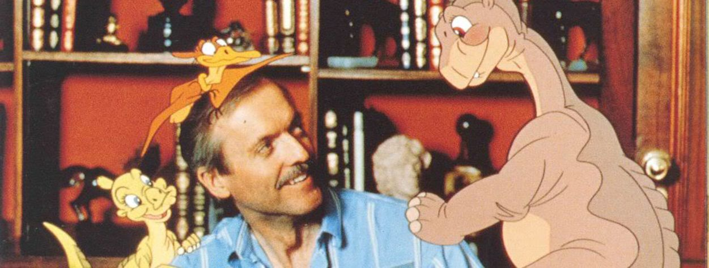

БИОГРАФИЯ

Аниматору и режиссёру Дону Блуту — 85 лет! 13 сентября 1937 года родился будущий создатель мультфильмов «Все псы попадают в рай», «Анастасия», «Земля до начала времён» и других полнометражек, которые мы все обожаем с детства. Блут прошёл диснеевский цех анимации, сотрудничал со Спилбергом и фанател от мышей, заявленных почти в каждой его работе. А ещё он честно показывал смерть, поддерживал слабых героев, отважившихся на подвиги, и настолько скрупулёзно выверял каждый кадр, что сложно не назвать его фильмы классикой. В честь его дня рождения вспоминаем, за что мы благодарны американскому аниматору, а заодно вспоминаем полнометражки, вышедшие из-под его карандаша.
Уже в возрасте четырёх лет Дон Блут понял, кем хочет стать, когда вырастет (завидуем!) — где-то в Эль-Пасо, штат Техас, он пересматривал «Белоснежку» раз за разом и осознавал, как сильно в нём резонирует подобная мультипликация: «Мне понравилось, как выглядит фильм и эмоциональный отклик на него… Пока я рос, у меня появилась привязанность к Disney Pictures, и я ждал каждый мультфильм с предвкушением нового восторга».
Его желание работать в индустрии не уменьшалось с годами, а только увеличивалось: пока в 16 лет подростки переживают личностный кризис и думают, куда же пойти учиться, Блут уже твёрдо знал, где его место. Но Disney оказался не конечной целью, а лишь одним из этапов творческого пути: в двадцать лет Блут покинул компанию из-за религиозных взглядов — отправился получать степень по английской литературе и работать миссионером в Аргентине. Обратно аниматор вернулся в 1971 году, спустя пять лет после смерти Уолта Диснея. Тогда концепция компании здорово поменялась: никаких прорывов в индустрии, вроде первого звукового или цветного мультфильма, не планировалось, главной задачей стала оптимизация расходов и попытка сохранить имя после ухода амбассадора.
В течение восьми лет Дон Блут нарабатывал руку, анимировал отдельные сцены, участвовал в создании «Спасателей» — не культового, но довольно приятного мультфильма Disney. Вряд ли вы слышали о нём, но точно знакомы с анимационной версией Круэллы де Виль. Вот «Спасатели» — что-то подобное, но с ведьмами, алмазами и мышами. Дон Блут не был режиссёром картины, однако по ней уже заметен его почерк: драматичная история, жуткие сцены (которых в дальнейшем станет только больше) и, конечно же, фокус на мышах-героях. Но всё-таки «Спасатели» — проходная история, а вот большие самостоятельные работы ждали Дона впереди. В 1979 году он вместе с коллегой Гэри Голдманом покинули студию со словами: «Мы не смогли здесь ничего изменить, возможно, если мы уйдём и будем соревноваться, это заставит вас работать усерднее». Тогда-то Блут и начал творить, а не просто рисовать.
После ухода из Disney Дон Блут и Гэри Голдман открывают свою студию Don Bluth Productions. Её знаковая работа — мультфильм «Секрет Н.И.М.Х», провалившийся из-за плохой рекламной кампании MGM. Картина рассказывает о миссис Бризби, которой приходится сражаться за спасение собственного домика с фермером Фицджиббом. Здесь стиль Блута проявляется всё отчётливее: в главных ролях — мышь-трусиха, которой автор даёт возможность проявить себя и стать смелее. Ну и что говорить про анимацию — восторг и классика, которую и сегодня можно ставить в пример многим.
Следующим этапом в карьере Блута стала работа со Стивеном Спилбергом — и снова про мышей (вы можете покинуть мышиную студию, но покинет ли она вас?). Мультфильм «Американский хвост» (или «Американская история») частично рассказывал историю родственников Спилберга: по сюжету, герои отправляются из России в Америку за лучшей жизнью, где нет кошек, зато сыра — полным-полно. Подобный миграционный путь прошли бабушка и дедушка режиссёра. Однако и характер Блута в мультфильме прослеживается: пусть сюжет прост, отдельные сцены будоражат — например, океан здесь превращён в устрашающего пожирателя. Ну и, конечно, мыши! Вкупе всё это принесло Блуту славу, а его компании — конкурентоспособное место на рынке анимации. Что ж, самое время Disney пошевелиться, но разговор не о ней.
Спустя ещё два года, уже в 1988-ом, Блут выпускает легендарную полнометражку «Земля до начала времён». Вы наверняка помните этих динозавров, а при упоминании сцены, где умирает мать Литтлфута, возможно, замирает сердечко (извините нас за это). Дон Блут считал важным рассказывать и о таких сторонах нашей жизни даже в контенте, предназначенном для детей: «Если вы не показываете тьму, вы не будете ценить свет. Важно видеть и хорошее, и плохое». Однако не все с ним были согласны: Стивен Спилберг и исполнительный продюсер Джордж Лукас вырезали 19 сцен из полнометражки в страхе, что одна часть зрителей после кинотеатра будет плакать, а другая — злиться, что первая плачет. Дополнительно компания решила перестраховаться и по поводу сцены смерти матери — мультфильм посмотрела команда психологов, чтобы оценить, насколько травматичным может оказаться подобное режиссёрское решение. Кто знает, запомнили бы мы так хорошо эту картину, если бы не такой трогательный эпизод? Передаём привет Муфасе и двигаемся дальше.